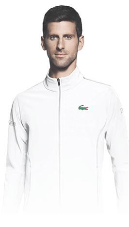

|  |
|
Ime: |
|---|
|
Novak |
|
Prezime: |
|
Djoković |
|
Mesto rodjenja: |
|
Beograd, SFR Jugoslavija |
|
Datum rodjenja: |
|
22.05.1987 |
|
Profesija: |
|
Teniser profesionalni(od 2003) |
|
Visina: |
|
188cm |
|
Tezina: |
|
75kg |
|
Igra: |
|
Desnom rukom |
|
Zarada: |
|
109.805.403$ |
|
Trener: |
|
Andre Agasi |
Karijera
Kao junior
Djoković je u 2001. bio trostruki prvak Evrope, u pojedinačnoj konkurenciji, parovima i ekipno. Naredne sezone postao je najbolji u Evropi u konkurenciji tenisera do 16 godina. Nakon pet odigranih ITF turnira, Đoković se našao na 40. mestu najboljih juniora sveta. Kao junior je imao odnos 40 pobeda i 11 poraza u pojedinačnoj konkurenciji, odnosno 23 pobede i 6 poraza u konkurenciji parova. Kao član reprezentacije Jugoslavije 2001. godine došao je do finala juniorskog Dejvis kupa za tenisere do 14 godina, u kojem je izgubio svoj meč u pojedinačnoj konkurenciji.
2003-2005
Na početku profesionalne karijere, Đoković je uglavnom igrao na čelendžer i fjučers turnirima, a našao se i na širem spisku reprezentacije SCG za mečeve protiv Obale Slonovače i Bugarske. Prvi fjučers je osvojio u Beogradu na terenima TK Crvena zvezda u junu 2003, 0 kao član TK Partizan, kada je u finalu savladao četvrtog nosioca i osvojio prvi ATP poen. Te godine je stigao do još dva polufinala fjučersa.
Procitaj jos
Godinu 2004. je započeo plasmanom u polufinale na fjučersu u Zagrebu, a 9. aprila je debitovao za Dejvis kup reprezentaciju Srbije i Crne Gore u meču protiv Letonca Janisa Skroderisa pobedivši sa 2:0. Na fjučersu u Bergamu stigao je do polufinala, a osvojio je fjučerse u Solnoku, Budimpešti i Beogradu. Prvi čelendžer Đoković je osvojio u Budimpešti, maja 2004. Posle je osvojio još dva čelendžera, u Ahenu (Nemačka) i Sanremu (Italija). Januara 2005. godine nastupio je u prvom kolu Otvorenog prvenstva Australije, što je bio njegov prvi meč u glavnom žrebu nekog grend slem turnira. Izgubio je od kasnijeg osvajača titule, Marata Safina. Nakon čelendžera u Beogradu u februaru 2005. Đoković je nastavio da igra samo na turnirima ATP-a.
2006
U poslednjim danima 2005. i prvim 2006. igrao je sa Anom Ivanović u Hopman kupu, kada su stigli do polufinala. Prethodnu godinu Đoković je završio na 78. mestu ATP liste. Četvrtfinale na Rolan Garosu i osmina finala na Vimbldonu uvrstili su ga u 40 najboljih tenisera na ATP listi. Nedugo posle Vimbldona osvojio je svoju prvu titulu, Otvoreno prvenstvo Holandije, bez izgubljenog seta. Druga titula koju je osvojio, u Mecu, uvrstila ga je u prvih 20 tenisera na ATP listi. U ovoj sezoni Đoković je takođe učestvovao na Masters turnirima u Indijan Velsu, Majamiju, Monte Karlu, Hamburgu, Madridu i Parizu.
Procitaj jos
Najbolji rezultat je ostvario u Madridu, gde je stigao do četvrtfinala u kom ga je pobedio Fernando Gonzales. Na svim ostalim turnirima takmičenje je završavao u jednom od prva tri kola. Đoković je prve mečeve svoja tri najveća rivalstva, protiv Rafaela Nadala, Rodžera Federera i Endija Marija, odigrao u ovoj sezoni. Najpre se, u prvom kolu Mastersa u Monte Karlu, sastao sa prvim teniserom sveta, Federerom. Švajcarac je odneo pobedu rezultatom 6:3, 2:6, 6:3. Zatim je Đoković ostvario svoj najbolji rezultat u dotadašnjoj karijeri, stigavši do četvrtfinala Rolan Garosa, gde je prvi put ukrstio reket sa Nadalom, ali je bio prinuđen da preda meč. Najzad je, krajem godine, na Mastersu u Madridu, preokrenuo rezultat protiv Marija i pobedio u meču osmine finala rezultatom 1:6, 7:5, 6:3. Godinu je završio na 16. mestu
2007
U prvoj sedmici januara osvojio je turnir u Adelajdu, pobedivši u finalu Krisa Gučionija. Dve sedmice posle, na prvom grend slem turniru sezone, Otvorenom prvenstvu Australije, stigao je do osmine finala, gde je izgubio od prvog tenisera sveta, Rodžera Federera. Djokovićev uspeh na turnirima Masters serije u Indijan Velsu, gde je bio finalista, i Majamiju, gde je bio pobednik, uvrstile su ga među deset najboljih na svetu. Na oba turnira, na kojima je prvi put stigao do finala turnira Masters serije, savladao je u polufinalima Endija Marija bez izgubljenog seta.
Procitaj jos
Finale turnira u Indijan Velsu je izgubio od Rafaela Nadala, ali ga je savladao u četvrtfinalu turnira u Majamiju, koji je osvojio pobedivši Giljerma Kanjasa u finalu, 6:3, 6:2, 6:4. Kasnije je igrao na turniru u Monte Karlu, gde ga je porazio David Ferer u trećem kolu. Đoković je stigao do četvrtfinala Mastersa u Rimu i Hamburgu, gde je izgubio od Karlosa Moje, odnosno od Nadala. Zatim je osvojio Otvoreno prvenstvo Eštorila, savladavši u finalu Rišara Gaskea, 7:6(7), 0:6, 6:1. Đoković je na Rolan Garosu stigao do prvog polufinala nekog grend slem turnira, gde je izgubio od kasnijeg pobednika, Rafaela Nadala. Na Vimbldonu 2007. Đoković je u četvrtfinalu savladao Kipranina Markosa Bagdatisa, 7:6(4), 7:6(9), 6:7(3), 4:6, 7:5, u meču koji je trajao 5 sati. U finalu je savladao najboljeg tenisera sveta Rodžera Federera, 7:6(2), 2:6, 7:6(2). Na putu do trofeja, Đoković je pobedio trećeplasiranog, drugoplasiranog i prvoplasiranog tenisera (Endija Rodika, Rafaela Nadala i Federera) u tri uzastopna dana. Đoković je bio prvi teniser kome je to uspelo još od Borisa Bekera 1994. godine. Međutim, na Masters turniru u Sinsinatiju sledeće nedelje, Đoković je poražen od Karlosa Moje u drugom kolu bez dobijenog seta. Na Otvorenom prvenstvu SAD Đoković je stigao do svog prvog grend slem finala gde ga je porazio Federer, 6:7(4), 6:7(2), 4:6. Đoković je u drugom kolu savladao Radeka Štjepaneka, 6:7(4), 7:6(5), 5:7, 7:5, 7:6(2), nakon skoro pet sati igre.
2008
Godinu 2008. Djoković je počeo u Pertu, na Hopman kupu, zajedno sa Jelenom Janković, gde su u finalu izgubili od predstavnika Sjedinjenih Država, Serene Vilijams i Mardija Fiša sa 2:1. Đoković je dobio sve mečeve u pojedinačnoj konkurenciji, ali je Jankovićeva zbog povrede bila prisiljena da preda svoj meč protiv Vilijamsove i da pokuša da pomogne Đokoviću u konkurenciji mešovitih parova. Novak Đoković na turniru Masters serije u Torontu 2008. godine
Procitaj jos
Na prvom grend slemu sezone, Otvorenom prvenstvu Australije, Đoković se plasirao u finale bez izgubljenog seta. Do tog uspeha stigao je savladavši u polufinalu prvog tenisera sveta, Rodžera Federera, rezultatom 7:5, 6:3, 7:6(5). U finalu, 27. januara, protivnik mu je bio najveće iznenađenje turnira, Žo-Vilfrid Conga iz Francuske, tada 38. teniser na ATP listi, koji je u drugom polufinalu pobedio drugog tenisera sveta, Rafaela Nadala. Novak Djoković je pobedio u finalu sa 3:1 u setovima i time osvojio prvi grend slem trofej u karijeri. Đoković je sa Jankom Tipsarevićem, Nenadom Zimonjićem i Viktorom Troickim izabran da se takmiči za Srbiju u prvom kolu Svetske grupe Dejvis kupa protiv Rusije od 8. do 10. februara. Tokom boravka u Moskvi, Đoković je oboleo od stomačnog gripa i propustio je prvi dan u pojedinačnoj konkurenciji. Vratio se drugog dana za pobedu u meču parova sa Zimonjićem protiv Mihaila Južnjog i Dmitrija Tursunova, ali je sledećeg dana predao meč Nikolaju Davidenku pri vođstvu 2:1 u setovima, čime je Rusija stekla nedostižnu prednost od 3:1. Nakon poslednjeg poena u finalu Tenis masters kupa u Šangaju 2008. godine Na sledećem turniru ATP-a, u Marselju, izgubio je od Francuza Žila Simona u drugom kolu. Posle toga je igrao turnir u Dubaiju, ali ga je u polufinalu izbacio Endi Rodik. Na Masters turniru u Indijan Velsu, Đoković je osvojio svoj drugi turnir u sezoni pobedivši u finalu Mardija Fiša sa 2:1 u setovima. Na turniru u Majamiju, izbacio ga je Kevin Anderson sa 2:1 u setovima u drugom kolu. Na turniru u Monte Karlu stigao je do polufinala, u kom je predao meč Rodžeru Federeru. Drugi po redu Masters na šljaci, u Rimu, osvojio je pobedivši Stanislasa Vavrinku rezultatom 4:6, 6:3, 6:3. Na Rolan Garosu 2008. stigao je do polufinala. Bio je treći favorit, iza Rafaela Nadala i Rodžera Federera, ali je izgubio od Nadala sa 6:4, 6:3, 7:6(3).
2009
Branio je titulu na Otvorenom prvenstvu Australije, ali je u četvrtfinalu predao meč Endiju Rodiku zbog iscrpljenosti i grčeva, pri Rodikovom vođstvu 6:7(3), 6:4, 6:2, 2:1.[46] U Indijan Velsu, gde je branio titulu, stigao je do četvrtfinala i tu izgubio od domaćeg tenisera, Endija Rodika.
Procitaj jos
U Majamiju je Đoković stigao do finala, ali u finalu je izgubio od Endija Marija. Na Masters turniru u Madridu lakim i brzim pobedama i bez izgubljenog seta stigao je do polufinala, u kojem je sa Rafaelom Nadalom igrao treći put u poslednjih pet sedmica. Uprkos činjenici da je imao tri meč-lopte, Đoković je izgubio susret rezultatom 6:3, 6:7(5), 6:7(9)Taj meč je trajao 4 sata i 2 minuta, i vremenski je najduži u pojedinačnoj konkurenciji odigran u tri seta u Open eri Naredni turnir na kojem je Đoković učestvovao bio je drugi grend slem turnir godine, Rolan Garos. Porazio ga je Filip Kolšrajber u trećem kolu, 6:4, 6:4, 6:4. Kao četvrti nosilac, došao je na treći grend slem u sezoni, Vimbldon. U polufinalu je bio očekivan meč između Đokovića i Federera, ali je Đokovića u četvrtfinalu još jednom pobedio Tomi Has, 7:5, 7:6(6), 4:6, 6:3. Đoković je odigrao poslednji grend slem sezone, Otvoreno prvenstvo SAD. U polufinalu ga je zaustavio Rodžer Federer, ovog puta u tri seta. Đoković je osvojio turnir u Pekingu, pobedivši u finalu Hrvata Marina Čilića rezultatom 6:2, 7:6(4). Osvojio je turnir ATP 500 serije u Bazelu, pobedivši u finalu trostrukog branioca titule, Rodžera Federera, 6:4, 4:6, 6:2.
2010
Prvi zvanični turnir na kome je Đoković igrao bio je prvi grend slem sezone, Otvoreno prvenstvo Australije. U četvrtfinalu ga je pobedio francuski teniser Žo-Vilfrid Conga, nakon pet setova. Uprkos tome, Đoković je 1. februara dostigao svoj najbolji plasman u dotadašnjoj karijeri, drugu poziciju na ATP listi. Na prva dva turnira iz Serije 1000 Đoković nije postigao zapažene rezultate. Đoković servira u Dejvis kup meču protiv Češke
Procitaj jos
Drugi grend slem sezone, Rolan Garos počeo je pobedom nad Jevgenijem Koroljovim, koji predstavlja Kazahstan. Ipak, u četvrtfinalu biva poražen od austrijskog tenisera Jirgena Melcera, 22. nosioca, u pet setova, uprkos ubedljivoj prednosti od 2:0 u setovima i ranom brejku prednosti u trećem. Meč je završen rezultatom 6:3, 6:2, 2:6, 6:7(3), 4:6. Dana 21. juna je počeo treći grend slem sezone, Vimbldon, na kom je Đoković bio postavljen za trećeg nosioca. U polufinalu je izgubio od Čeha Tomaša Berdiha. Krajem avgusta počeo je poslednji grend slem turnir u sezoni, Otvoreno prvenstvo SAD. U polufinalu, Đoković je spasao dve meč-lopte protiv Rodžera Federera, došavši do pobede od 5:7, 6:1, 5:7, 6:2, 7:5. Ovom pobedom je postao drugi teniser, pored Rafaela Nadala, koji je ostvario dve pobede protiv Federera na grend slem turnirima. U svom drugom finalu na ovom turniru ponovo biva poražen, ovoga puta od Nadala. Četvrtu sezonu zaredom Đoković je uspeo da se plasira na završni šampionat ATP-a, i to kao treći teniser sveta. Trijumfom nad Endijem Rodikom, ostvaruje plasman u polufinale. Treći put zaredom gubi od kasnijeg šampiona, Rodžera Federera, ovoga puta rezultatom 2:0.
2011
Đokovićeva sezona 2011. godine se smatra jednom od najboljih u istoriji tenisa. Osvojio je deset turnira, od kojih tri grend slema (Otvoreno prvenstvo Australije, Vimbldon i Otvoreno prvenstvo SAD), pet Masters turnira (Indijan Vels, Majami, Madrid, Rim i Kanadu), ATP Dubai i Otvoreno prvenstvo Srbije. U julu je postao prvi teniser sveta. Đoković je od starta sezone do polufinala Rolan Garosa napravio niz od 41 pobede, a ako se računaju dve pobede na Dejvis kupu 2010, 43 pobede.
Procitaj jos
Postavio je nekoliko rekorda, uključujući broj titula na Masters turnirima u jednoj sezoni (5), broj uzastopnih pobeda na Mastersima (31), broj uzastopnih Masters finala (6), ukupnoj zaradi u sezoni (12, 6 miliona dolara) i najbržoj kvalifikaciji za Završni masters (18 nedelja i 6 dana). Đoković je počeo sezonu na Otvorenom prvenstvu Australije, koji je osvojio pobedivši Rodžera Federera u polufinalu i Endija Marija u finalu. Nakon toga je osvojio turnir iz ATP 500 serije u Dubaiju, pobedivši Federera u finalu. Zatim Đoković osvaja četiri Masters turnira: Indijan Vels, Majami, Madrid i Rim. U sva četiri finala pobedio je prvog tenisera sveta, Rafaela Nadala. Prvi poraz u sezoni doživljava na Rolan Garosu, gde ga je u polufinalu izbacio Federer. Sledeći turnir osvojio je na Vimbldonu, ponovo pobedivši Nadala u finalu. Tada je preuzeo prvo mesto na ATP listi. Na Masters turniru u Torontu je savladao Fiša u finalu. Na Mastersu u Sinsinatiju je pretrpeo drugi poraz u sezoni, kada je predao finale Mariju. Na Otvorenom prvenstvu SAD Đoković je bio prvi nosilac. U polufinalu je spasio dve meč-lopte protiv Rodžera Federera, a u finalu ponovo je savaladao Nadala. Ovo je bio poslednji turnir koji je osvojio, pošto je u Bazelu ispao u polufinalu, u Parizu u četvrtfinalu, a na Završnom mastersu u grupnoj fazi.
2012
Đoković je počeo sezonu odbranom titule na Otvorenom prvenstvu Australije. U polufinalu je savladao Marija, u meču koji je trajao 4 sata i 50 minuta, a u finalu Nadala. Njihov susret trajao je 5 sati i 53 minuta, što predstavlja rekord po dužini finala jednog grend slema. Na sledeća dva turnira na kojima je branio titulu, Dubaiju i Indijan Velsu, ispao je u polufinalu, od Marija, odnosno od Iznera. Titulu u Majamiju je odbranio bez izgubljenog seta.
Procitaj jos
Sezonu na šljaci Đoković je počeo na Mastersu u Monte Karlu, gde je u finalu poražen od Nadala, čime je Španac prekinuo seriju od sedam poraza u međusobnim duelima. Sa Mastersa u Madridu ga je izbacio sunarodnik Janko Tipsarević. U Rimu je Đoković branio titulu, ali ga je Nadal ponovo pobedio u finalu. Na Rolan Garosu Đoković je imao priliku da postane prvi vlasnik sve četiri grend slem titule istovremeno, još od Roda Lejvera 1969. godine. Nakon što je prošao kroz dva meča od pet setova, protiv Sepija i Conge, u polufinalu je porazio Rodžera Federera sa 3:0. Finale je, međutim, izgubio od Nadala rezultatom 1:3. Na Vimbldonu je Đokovića u polufinalu izbacio kasniji šampion Federer. Osvajanjem turnira Švajcarac ga je pretekao na prvom mestu ATP liste. Na Olimpijskim igrama Đokovića je u polufinalu zaustavio Endi Mari, a u meču za bronzanu medalju Huan Martin del Potro. Đoković se pojavio u finalima sva tri turnira američke serije, ali je osvojio samo Toronto, dok su ga u Sinsinatiju i na Otvorenom prvenstvu SAD porazili, redom, Federer i Mari. Đoković je osvojio oba turnira u Kini, Peking i Šangaj. Finale Mastersa u Šangaju, u kom je spasao pet meč-lopti protiv Marija, proglašeno je najboljim mečom u 2012. godini. Nakon ranog ispadanja sa Mastersa u Parizu, Đoković je bez poraza osvojio Završni turnir sezone. U finalu je pobedio Federera sa 2:0, iako je Švajcarac vodio u oba seta. Đoković je 5. novembra ponovo preuzeo prvu poziciju na ATP listi.
2013
Đoković je u januaru osvojio treću uzastopnu titulu na Otvorenom prvenstvu Australije, a ukupno četvrtu, čime je izjednačio rekord Federera i Agasija. U osmini finala je bio blizu poraza protiv Švajcarca Stanislasa Vavrinke, ali je uspeo da pobedi sa 12:10 u petom setu. U finalu je pobedio Endija Marija rezultatom 3:1. Đoković je produžio niz pobeda u Dubaiju, osvojivši turnir bez izgubljenog seta. Prvi poraz Srbin je doživeo od Del Potra u polufinalu Indijan Velsa. U Majamiju je ispao iznenađujuće rano, protiv veterana Tomija Hasa, u osmini finala.
Procitaj jos
Sezonu na šljaci Đoković je počeo u Monte Karlu, gde je osvojio pehar. U finalu je pobedio osmostrukog branioca titule, Rafaela Nadala. Na taj način je postao prvi igrač koji je osvojio osam različitih Masters titula. Sa Mastersa u Madridu je, međutim, ispao već u drugom kolu, od Bugarina Dimitrova. Đokovića je u Rimu, u četvrtfinalu, pobedio Tomaš Berdih, iako je Srbin servirao za meč. Na Rolan Garosu, Rafael Nadal je ponovo sprečio Đokovića da osvoji jedini grend slem turnir koji mu nedostaje, pobedivši u pet setova dugom polufinalnom meču, koji je kasnije proglašen najboljim u 2013. godini. Vimbldon je Đoković igrao sigurno do polufinala, gde mu je bilo potrebno pet setova da pobedi Huana Martina del Potra. U finalu ga je sa 3:0 pobedio domaći igrač Endi Mari , postavši prvi Britanac od 1936. sa titulom na najstarijem grend slem turniru. Američku seriju Đoković je odigrao najslabije u poslednjih nekoliko godina, zabeleživši sledeće rezultate: polufinale u Montrealu (poraz od Rafaela Nadala), četvrtfinale u Sinsinatiju (poraz od Džona Iznera) i finale Otvorenog prvenstva SAD (ponovo poraz od Nadala). Dvanaest puta je pobedio igrače iz prvih deset, uključujući po dve pobede nad Nadalom, Del Potrom i Rodžerom Federerom. Uprkos tome, Nadal je 6. oktobra preuzeo od Đokovića prvu poziciju na ATP listi i završio godinu kao svetski broj jedan. Đoković je u ovoj sezoni učestvovao u susretima Dejvis kup reprezentacije Srbije protiv Belgije, SAD, Kanade i Češke, donevši svom timu sedam pobeda u isto toliko mečeva, usput izgubivši samo jedan set. Ipak, to je bilo nedovoljno za pobedu u finalu protiv Češke, koja je osvojila „Salataru” rezultatom 3:2.
2014
Đoković nije uspeo da odbrani titulu na Otvorenom prvenstvu Australije, jer je u četvrtfinalu izgubio od kasnijeg osvajača turnira, Stanislasa Vavrinke, u neizvesnom meču dugom pet setova. Time je prekinut Đokovićev niz od 14 uzastopnih polufinala na grend slem turnirima. Titulu u Dubaiju je takođe morao da prepusti Švajcarcu, Rodžeru Federeru, posle poraza u polufinalu.
Procitaj jos
Međutim, Đoković je uspeo da osvoji titule i u Indijan Velsu i u Majamiju, što mu je nije pošlo za rukom od 2011. godine.U finalima je pobedio Federera i Rafaela Nadala, prvog tenisera sveta. Đoković je branio titulu na Mastersu u Monte Karlu, ali ga je u polufinalu pobedio Federer. Turnir u Madridu je propustio zbog povrede ručnog zgloba. Masters turnir u Rimu Đoković je uspeo da osvoji iako je u četiri meča zaredom izgubio po jedan set. U finalu je pobedio branioca titule Nadala. Sa Špancem je imao još jedan okršaj u finalu Rolan Garosa, ali ponovo nije uspeo da osvoji šljakasti grend slem.Posle tri uzastopna poraza u finalima grend slem turnira, Đoković je uspeo da osvoji Vimbldon po drugi put u karijeri. U finalu je odigrao jedan od najkvalitetnijih mečeva u karijeri, protiv Rodžera Federera, i uspeo da trijumfuje sa 3:2. Nakon osvajanja svoje sedme grend slem titule, ponovo je postao prvi teniser sveta. Đokovićeva igra na dva severnoamerička Masters turnira u avgustu bila je još slabija nego prethodne godine, te je i u Torontu i u Sinsinatiju ispao u trećem kolu. Na poslednjem grend slem turniru sezone, Otvorenom prvenstvu SAD, pobedio je Endija Marija u četvrtfinalu rezultatom 3:1, ali je zatim izgubio polufinale od Japanca Keja Nišikorija, koji se postarao da se po prvi put u skoro deset godina u finalu jednog grend slem turnira ne pojave ni Federer, ni Nadal, ni Đoković
2015
Statistički gledano, Đokovićeva sezona u 2015. godini nadmašila je čak i onu iz 2011. Stigao je do finala sva četiri grend slem turnira, kao treći teniser kome je to uspelo u Open eri (posle Lejvera i Federera).
Procitaj jos
Osvojio je rekordnu petu titulu na Otvorenom prvenstvu Australije pobedom nad Endijem Marijem, odbranio pehar na Vimbldonu u reprizi prošlogodišnjeg finala protiv Federera, i popravio svoj učinak u finalima Otvorenog prvenstva SAD, još jednom pobedom nad Švajcarcem.Jedini poraz doživeo je, ponovo, na Rolan Garosu. Iako je ove godine konačno uspeo da savlada Rafaela Nadala u Parizu, u četvrtfinalu, usledilo je polufinale u pet setova protiv Marija, a potom poraz od Stanislasa Vavrinke, koji je odigrao jedan od najboljih mečeva karijere. Đoković je ove sezone postao prvi teniser koji je osvojio prva tri Masters turnira u sezoni – Indijan Vels, Majami i Monte Karlo. Nakon još jednog propuštenog Mastersa u Madridu, odbranio je titulu u Rimu, pobedivši Federera za četvrtu titulu u „Večnom gradu”. Nastavio je svoj „post” na severnoameričkoj letnjoj Masters seriji, izgubivši u finalima Montreala i Sinsinatija od Marija i Federera. Britanac je time prekinuo niz od osam poraza protiv Đokovića. Možda dve najdominantnije nedelje u sezoni najbolji teniser sveta ostvario je na turnirima u Pekingu i Šangaju, ne izgubivši nijedan set. Nakon treće uzastopne titule u pariskom „Bersiju”, doživeo je poslednji poraz u godini, od Federera, u grupnoj fazi Završnog turnira sezone. Revanširao mu se već u finalu, osvojivši rekordnu četvrtu uzastopnu titulu na turniru koji okuplja osam najboljih tenisera u sezoni. Trijumfom nad Rafaelom Nadalom u polufinalu, izjednačio se sa svojim najvećim rivalom po broju pobeda. Đoković je u ovoj sezoni nastupio na 16 turnira, a do finala nije stigao samo na prvom, u Dohi. Ovaj rekordni niz u toku jedne sezone obeležen je osvajanjem 11 titula, od toga rekordnih šest Masters turnira. Još neki rekordi koje je srpski teniser postavio u ovoj sezoni uključuju najveći broj pobeda nad igračima iz prvih deset (31), najveći broj poena na ATP listi (16.785), kao i najveću zaradu od turnira (21,6 miliona dolara). Po prvi put je celu sezonu proveo kao najbolje rangirani teniser sveta.
2016
Đoković je osvojio svoju 60. titulu u karijeri u Dohi, pobedivši Nadala rezultatom 6:1, 6:2. Rekordnu šestu titulu u Melburnu je osvojio, savladavši u revanšu finala iz 2015. godine, Endija Marija u tri seta. Osvojio je peti Masters u Indijan Velsu, pobedivši u finalu Miloša Raonića. Početkom aprila, Đoković je bez izgubljenog seta osvojio naredni Masters, u Majamiju, savladavši Keja Nišikorija u finalu.
Procitaj jos
Kao branilac titule u Monte Karlu, Đoković je neočekivano doživeo poraz već na startu turnira od Čeha Jiržija Veselog. U finalu Madrida je savladao Endija Marija sa 6:2, 3:6 i 6:3. Drugu uzastopnu nedelju igrao je finale protiv Marija u Rimu, ali je Britanac ovog puta dobio meč rezultatom 6:3, 6:3. grend slem turnira u nizu. Postao je osmi igrač koji je kompletirao titule na grend slemovima, posle Freda Perija, Dona Badža, Roda Lejvera, Roja Emersona, Andrea Agasija, Rodžera Federera i Rafaela Nadala. U finalu je pobedio Endija Marija sa 3:1, i postao jedini teniser u istoriji koji je osvojio četiri grend slem turnira u nizu na tri različite podloge — beton, trava i šljaka Zatim su usledile Olimpijske igre i pored velikih očekivanja, nije ostvario zapaženiji rezultat. Izgubio je u prvom kolu od Huana Martina del Potra u dva tajbrejka. Đoković je osvojio 30 masters u karijeri pobedivši u Torontu Keija Nišikorija u dva seta. Na Ju es openu je igrao u finalu gde je poražen od Švajcarca Stanislasa Vavrinke sa 3:1. Na pretposlednjem mastersu sezone u Šangaju, Đoković je izgubio u polufinalu od 15 nosioca Bautiste Aguta iz Španije. Na mastersu u Parizu je ispao u četvrtfinalu, čime je britanski teniser Endi Mari preuzeo prvo mesto na ATP listi od Đokovića. Poslednji turnir sezone Đoković je odigrao u Londonu, izgubio u finalu od Marija i godinu završio na drugom mestu..
2017
Đoković je na startu sezone osvojio 67. titulu u karijeri u Dohi, pošto je u finalu pobedio Marija u tri seta. U drugom kolu Australijan opena je iznenađujuće poražen od Denisa Istomina sa 3:2. Na naredna dva turnira u Akapulku i Indijan Velsu je poražen od Nika Kirjosa iz Australije.
Procitaj jos
U maju 2017. godine, Đoković je objavio da raspušta ceo tim i stručni štab na čelu sa trenerom Marijanom Vajdom, kondicionim trenerom Gričom i fizioterapeutom Miljanom Amanovićem. Na masters turniru u Madridu, Đoković je izgubio u polufinalu od Nadala u dva seta. Sedam dana kasnije, Đoković je odigrao mnogo bolje i stigao je do finala mastersa u Rimu gde je poražen od Aleksandra Zvereva iz Nemačke. Od 21. maja 2017. novi trener u stručnom štabu Đokovića je nekadašnji američki teniser Andre Agasi. Krajem juna meseca mu se pridružio Mario Ančić. Đoković je osvojio ATP 250 turnir u Istbornu, ukupno 68 u karijeri, ali je zbog povrede lakta bio primoran da preda meč Tomašu Berdihu u četvrtfinalu Vimbldona. Nakon tog meča, objavio je krajem jula na konferenciji za štampu da se zbog teže povrede lakta povlači do kraja sezone.